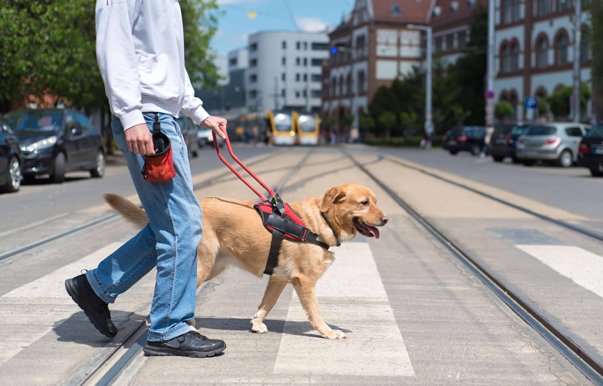

Service Dogs
What is a service dog?
Service dogs are so much more than pets. These dogs have been trained to serve their owners in a variety of roles. They can aid their humans in tasks like picking up dropped items, fetching medications, medical alerts, guding them across the street, and so many other tasks. Today there are around 500,000 service dogs in the United States. Service dogs are not to be confused with an emotional support animal. Service dogs are protected under the Americans with Disabilities Act. Therefore these animals are allowed to be in all public spaces with their owners.
Aid offered by a service dog
Service dogs are trained with a specific disability in mind and an owner is matched with a dog that will best aid them. A guide dog is commonly what people think of when they hear "service dog". These dogs assist people who are blind or otehrwise visually impaired by leading them through obstacles, down the street, or bringing simple objects. Seizure alert dogs are used to detect a seizure and alert the owner of one incoming. This makes it easier for the owner to be able to get somewhere safe or take any medication they need. Psychiatric service dogs are trained to deal with a number of mental health disorders such as PTSD, depression, or bipolar disroder. These dogs can provide comfort when the person is distressed or maintain a barrier of space between them and the people around them. There are so many other service dogs but these are some commonly known.